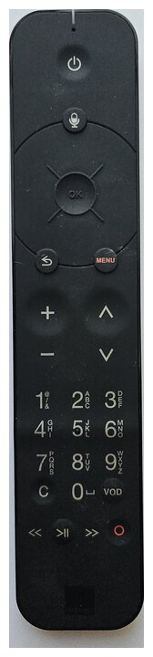
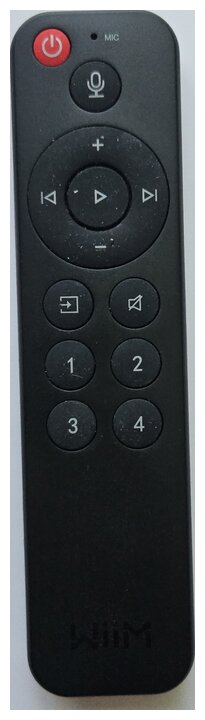
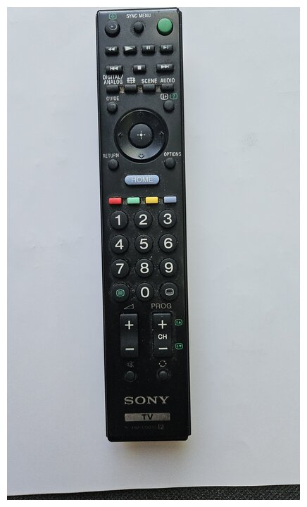
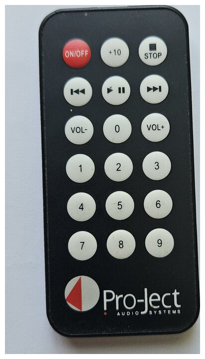

TV y Sonido — lo esencial
Déjelo sobre la mesa del salón.
¿Más detalles?
Guía detallada, vídeos y ayuda — escanee

🇫🇷 🇬🇧 🇪🇸 🇮🇹 🇩🇪 🇵🇹
Sus 4 mandos — usará sobre todo los dos primeros

1 TV y Apps
Canales, Netflix, Disney+, YouTube

2 Sonido
Volumen + elegir la fuente

3 Pantalla
Encender / apagar la tele

4 CD
Escuchar discos
▶ Ver la tele
- Encienda los 3 mandos 1 2 3 (el botón de encendido/apagado de cada uno).
- En 2 Sonido: pulse el botón de fuente (⤴) hasta que la pantalla redonda muestre Optical In.
- Volumen: ajústelo con 1 y 2.
⚠ ¿No hay sonido? El mando 3 Pantalla nunca ajusta el volumen — son 1 y 2. Compruebe también que ninguno esté a cero.
Cambiar de canal: marque el número en 1, o cambie con las teclas + / −.